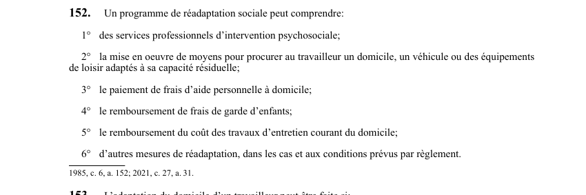

art-152-LATMP : adaptation poste
Un article du wiki ⚖️ Recueil législatif
En bref
Adaptation poste.
🌐 LegisQuébec · 📄 PDF officiel (page 41)
Texte officiel : capture du PDF

Toucher l'image pour l'agrandir🔗 Ouvrir a cette page : LATMP.pdf : page 41 · texte a jour au 20 février 2024
Jurisprudence
Décisions du recueil citant cet article (PDF intégré sur chaque fiche) :
- 📚 B. Indemnités diverses et réadaptation Dauray et Inventy Canada inc (2023 QCTAT 362)
- 📚 Barbe et Centre régional de réadaptation La Ressourse (2023 QCTAT 3070)
- 📚 Camiré et Escaliers de Beauce inc (2023 QCTAT 598)
- 📚 Centre-Sud-de-l'Île-de-Montréal c. Murwanashyaka (2023 QCTAT 3481)
- 📚 Claisse et Maçonnerie Michel Raymond inc (2023 QCTAT 1253)
- 📚 Dauphinais et Siemens Canada ltée (2023 QCTAT 2252)
- 📚 Ducharme et Musée Pointe-à-Callière (2023 QCTAT 3292)
- 📚 Guillemette et Clinique Gascon inc (2023 QCTAT 444)
Jurisprudence
- B. Indemnités diverses et réadaptation Dauray et Inventy Canada inc (2023 QCTAT 362)
- Barbe et Centre régional de réadaptation La Ressourse (2023 QCTAT 3070)
- Camiré et Escaliers de Beauce inc (2023 QCTAT 598)
- Centre-Sud-de-l'Île-de-Montréal c. Murwanashyaka (2023 QCTAT 3481)
- Claisse et Maçonnerie Michel Raymond inc (2023 QCTAT 1253)
- Dauphinais et Siemens Canada ltée (2023 QCTAT 2252)
- Ducharme et Musée Pointe-à-Callière (2023 QCTAT 3292)
- Guillemette et Clinique Gascon inc (2023 QCTAT 444)
- Jenkins et Gardium Sécurité inc (2023 QCTAT 697)
- Larivée et Centre de services scolaire des Grandes-Seigneuries (2023 QCTAT 30)
- Mc Elherron et Sciage de béton St-Léonard ltée (2023 QCTAT 4075)
- Ministère de la Famille et Dekimeche (2023 QCTAT 1505)
- Oui Signature sur le Saint-Laurent construction et Filion (2023 QCTAT 344)
- Rioux et Emballages Winpak Heat Seal inc (2023 QCTAT 1353)
- Régie intermunicipale de police Roussillon inc. et Régie intermunicipale de police Roussillon (2023 QCTAT 1141)
Voir aussi
- 🔧 Modifié par : LMRSST art. 31 · modifie art.
- ↑ Loi : LATMP
Pages qui pointent ici (20)
- art-31-LMRSST : modifie l'art. 152 LATMP Recueil législatif
- B. Indemnités diverses et réadaptation Dauray et Inventy Canada inc Recueil législatif
- Barbe et Centre régional de réadaptation La Ressourse Recueil législatif
- Camiré et Escaliers de Beauce inc Recueil législatif
- Centre-Sud-de-l'Île-de-Montréal c. Murwanashyaka Recueil législatif
- Claisse et Maçonnerie Michel Raymond inc Recueil législatif
- Dauphinais et Siemens Canada ltée Recueil législatif
- Droit à la réadaptation Droit du travail
- Ducharme et Musée Pointe-à-Callière Recueil législatif
- Guillemette et Clinique Gascon inc Recueil législatif
- Index des décisions : table de travail Recueil législatif
- Jenkins et Gardium Sécurité inc Recueil législatif
- Larivée et Centre de services scolaire des Grandes-Seigneuries Recueil législatif
- LATMP : Chapitre V : Réadaptation Recueil législatif
- Mc Elherron et Sciage de béton St-Léonard ltée Recueil législatif
- Ministère de la Famille et Dekimeche Recueil législatif
- Oui Signature sur le Saint-Laurent construction et Filion Recueil législatif
- PDFs de jurisprudence et de doctrine Recueil législatif
- Régie intermunicipale de police Roussillon inc. et Régie intermunicipale de police Roussillon Recueil législatif
- Rioux et Emballages Winpak Heat Seal inc Recueil législatif